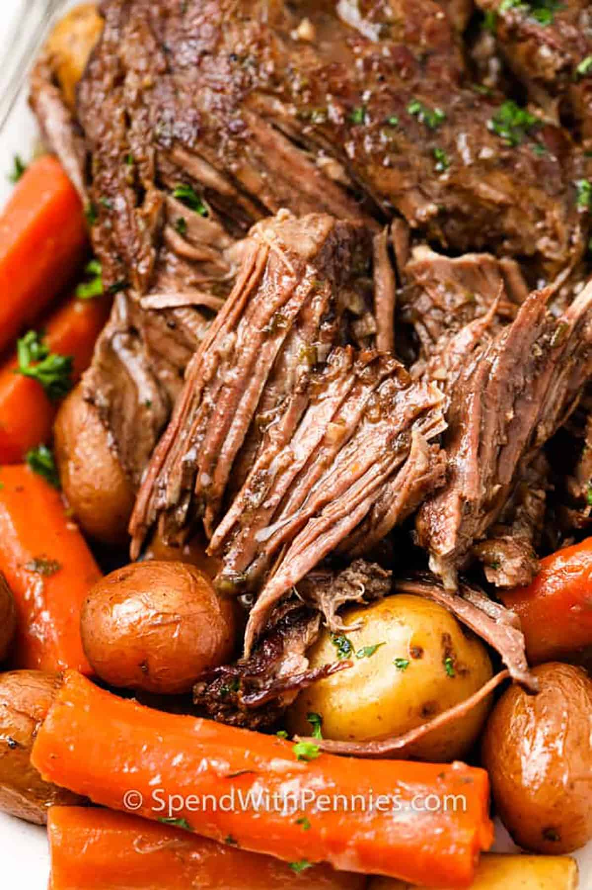

Pot Roast recipe

Description
This slow cooker pot roast only takes six ingredients to make thanks to a packet of onion soup mix. It gives the roast a ton of flavor without a ton of
work, and no one will even know it’s there. The best part? You just dump everything into the slow cooker, walk away for a few hours, and dinner
practically cooks itself. Serve it over egg noodles or rice and dinner is good to go.
Ingredients
- 3 pound chuck roast
- 1 ounce dried onion soup mix
- 1 onion
- 3 large carrots
- 3 gold potatoes
- 1/2 cup water
- Salt and pepper, to taste
Steps
- Place the chuck roast in a 7-quart (6 ½ liters) slow cooker and season with salt and pepper.
- Sprinkle the onion soup pack and top with vegetables and water.
- Cook on low for 8 hours, or high for 4-5 hours.